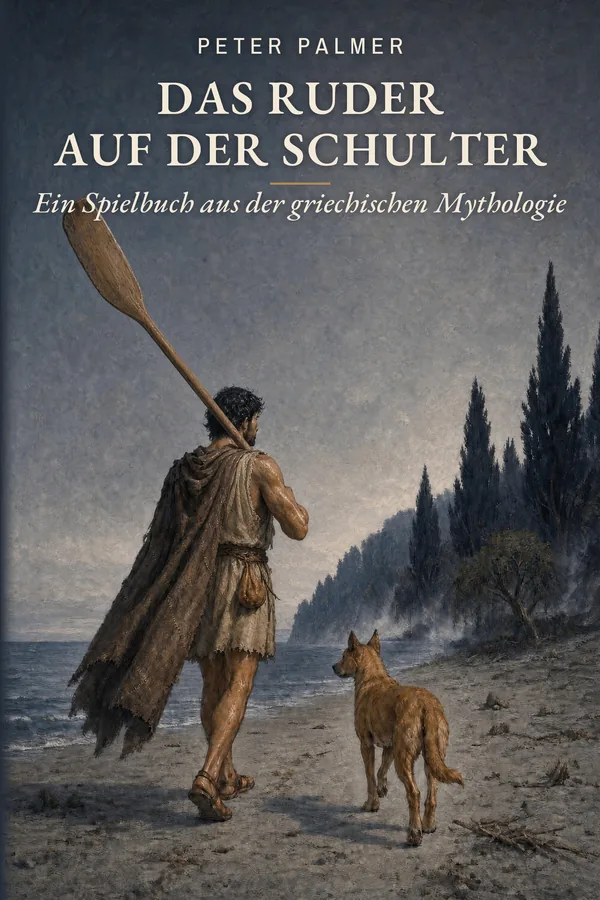

Griechische Mythologie · ab 14 Jahren
Das Ruder auf der Schulter
Ein Spielbuch aus der griechischen Mythologie
Ein Sturm bricht den Mast des Schiffes. Anfialo, Enkel des Odysseus, erwacht an einem grauen Strand unter einem fremden Himmel, mit einem jungen rotbraunen Hund als einzigem Führer.
Im Reich der Schatten will jeder seinen Namen wissen. Du entscheidest, wem du vertraust, wann du kämpfst und wann du fliehst, um die Rechnung zu begleichen, die seine Familie mit dem Meer offen hat.
Demnächst